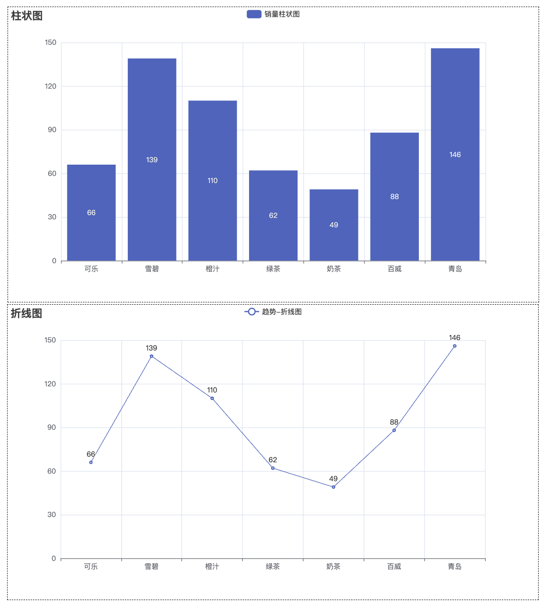

pyecharts 教程¶
一、简介¶
二、基础¶
柱状图¶
from pyecharts.charts import Bar
from pyecharts import options as opts
from pyecharts.globals import ThemeType
bar = (
Bar(init_opts=opts.InitOpts(theme=ThemeType.LIGHT, bg_color="white"))
.add_xaxis(xaxis_data=["A", "B", "C", "D"])
.add_yaxis(
series_name="销量",
y_axis=[30, 60, 45, 80],
itemstyle_opts=opts.ItemStyleOpts(color="green"), # 设置柱子颜色为绿色
)
.set_global_opts(
title_opts=opts.TitleOpts(
title="柱状图示例",
title_textstyle_opts=opts.TextStyleOpts(color="red")
),
xaxis_opts=opts.AxisOpts(type_="category", name="X 轴"),
yaxis_opts=opts.AxisOpts(type_="value", name="Y 轴"), # Y轴应该是数值轴
legend_opts=opts.LegendOpts(textstyle_opts=opts.TextStyleOpts(color="purple"))
)
.set_series_opts(
label_opts=opts.LabelOpts(
color="red",
position="top" # top bottom left right inside outside
)
)
)
# 渲染到Jupyter Notebook
bar.render_notebook()

折线图¶
from pyecharts.charts import *
from pyecharts.globals import *
import pyecharts.options as opts
line = (
Line(init_opts=opts.InitOpts(bg_color="white"))
.add_xaxis(["Jan", "Feb", "Mar", "Apr"])
.add_yaxis("销售额",[1000, 1200, 1100, 1300])
.set_global_opts(title_opts=opts.TitleOpts(title="折线图示例"),toolbox_opts=opts.ToolboxOpts())
)
line.render_notebook()

饼图 Pie（环形 + 百分比）¶
import pyecharts.options as opts
pie = (
Pie(init_opts=opts.InitOpts(
bg_color="white",
theme=ThemeType.LIGHT
))
.add("产品占比",data_pair=[("手机", 40), ("平板", 30), ("电脑", 20), ("配件", 10)],radius=["40%","70%"])
.set_series_opts(label_opts=opts.LabelOpts(formatter="{b}:{d}%"))
.set_global_opts(title_opts=opts.TitleOpts(title="饼图示例"),toolbox_opts=opts.ToolboxOpts())
)
pie.render_notebook()

仪表盘 Gauge¶
from pyecharts.charts import *
from pyecharts.globals import *
import pyecharts.options as opts
gauge = (
Gauge(init_opts=opts.InitOpts(
theme=ThemeType.LIGHT,
bg_color="white"
))
.add("完成率",[("完成", 66)])
.set_global_opts(title_opts=opts.TitleOpts(title="仪表板示例"),toolbox_opts=opts.ToolboxOpts())
)
gauge.render_notebook()

水球图 Liquid¶
from pyecharts.charts import *
from pyecharts.globals import *
import pyecharts.options as opts
liquid = (
Liquid(init_opts=opts.InitOpts(
theme=ThemeType.LIGHT,
bg_color="white"
))
.add("完成度",[0.45,0.3])
.set_global_opts(title_opts=opts.TitleOpts(title="水球图示例"),
toolbox_opts=opts.ToolboxOpts())
)
liquid.render_notebook()

热力图 HeatMap¶
from pyecharts.charts import HeatMap
from pyecharts import options as opts
x_data = ["Monday", "Tuesday", "Wednesday", "Thursday", "Friday", "Saturday", "Sunday"]
y_data = ["8AM", "10AM", "12PM", "2PM", "4PM", "6PM"]
# 构造 value，形如 [(x_index, y_index, value)]
import random
data = [[i, j, random.randint(0, 100)] for i in range(len(x_data)) for j in range(len(y_data))]
heatmap = (
HeatMap(init_opts=opts.InitOpts(
theme=ThemeType.LIGHT,
bg_color="white"
))
.add_xaxis(x_data)
.add_yaxis("活跃度", y_data, data)
.set_global_opts(
title_opts=opts.TitleOpts(title="热力图示例"),
visualmap_opts=opts.VisualMapOpts(min_=0, max_=100),
toolbox_opts=opts.ToolboxOpts()
)
)
heatmap.render_notebook()

K线图 Kline¶
from pyecharts.charts import Kline
from pyecharts import options as opts
from pyecharts.globals import *
# 示例数据（日期 & K线数据）
x_data = ["2025-07-01", "2025-07-02", "2025-07-03", "2025-07-04"]
y_data = [
[2320.26, 2320.26, 2287.3, 2362.94],
[2300, 2291.3, 2288.26, 2308.38],
[2295.35, 2346.5, 2295.35, 2346.92],
[2347.22, 2358.98, 2337.35, 2363.8]
]
kline = (
Kline(init_opts=opts.InitOpts(
theme=ThemeType.LIGHT,
bg_color="white"
))
.add_xaxis(x_data)
.add_yaxis("K线图", y_data)
.set_global_opts(
title_opts=opts.TitleOpts(title="K线图示例"),
xaxis_opts=opts.AxisOpts(type_="category"),
yaxis_opts=opts.AxisOpts(type_="value"),
datazoom_opts=[opts.DataZoomOpts(), opts.DataZoomOpts(type_="inside")],
tooltip_opts=opts.TooltipOpts(trigger="axis", axis_pointer_type="cross"),
toolbox_opts=opts.ToolboxOpts()
)
)
kline.render_notebook()

漏斗图 Funnel¶
from pyecharts.charts import Funnel
from pyecharts.globals import *
import pyecharts.options as opts
funnel = (
Funnel(init_opts=opts.InitOpts(
theme=ThemeType.LIGHT,
bg_color="white"
))
.add("转化", [("展示", 100), ("点击", 80), ("咨询", 50), ("购买", 30)])
.set_global_opts(title_opts=opts.TitleOpts(title="漏斗图示例"),
toolbox_opts=opts.ToolboxOpts())
)
funnel.render_notebook()

散点图¶
from pyecharts.charts import *
from pyecharts.globals import *
import pyecharts.options as opts
import random
x_data = [i for i in range(50)]
y_data = [random.randint(0, 100) for _ in range(50)]
scatter = (
Scatter(init_opts=opts.InitOpts(
theme=ThemeType.LIGHT,
bg_color="white"
))
.add_xaxis(x_data)
.add_yaxis("",y_axis=y_data)
.set_global_opts(title_opts=opts.TitleOpts(title="基础散点图"),
xaxis_opts=opts.AxisOpts(type_="value",splitline_opts=opts.SplitLineOpts()),
yaxis_opts=opts.AxisOpts(type_="value",splitline_opts=opts.SplitLineOpts()),
toolbox_opts=opts.ToolboxOpts(),
visualmap_opts=opts.VisualMapOpts(),
)
)
scatter.render_notebook()

旭日图¶
from pyecharts.charts import *
from pyecharts.globals import *
import pyecharts.options as opts
# 构造数据
data = [
opts.SunburstItem(
name="类别 1",
children=[
opts.SunburstItem(name="子类 1",value=1),
opts.SunburstItem(name="子类 2",value=2)
]
),
opts.SunburstItem(
name="类别 2",
value=3,
children=[
opts.SunburstItem(name="子类 3",value=1),
opts.SunburstItem(name="子类 4",value=1),
opts.SunburstItem(name="子类 5",value=1)
]
)
]
sunburst = (
Sunburst(init_opts=opts.InitOpts(
theme=ThemeType.LIGHT,
bg_color="white"
))
.add("",data_pair=data,radius=[0,'90%'])
.set_series_opts(label_opts=opts.LabelOpts(formatter="{b}"))
.set_global_opts(toolbox_opts=opts.ToolboxOpts(),title_opts=opts.TitleOpts(title="旭日图示例"))
)
sunburst.render_notebook()

堆叠面积图¶
from pyecharts.charts import Line
from pyecharts import options as opts
# 示例数据
x_data = ["周一", "周二", "周三", "周四", "周五", "周六", "周日"]
y1 = [120, 132, 101, 134, 90, 230, 210]
y2 = [220, 182, 191, 234, 290, 330, 310]
y3 = [150, 232, 201, 154, 190, 330, 410]
line = (
Line(init_opts=opts.InitOpts(
theme=ThemeType.LIGHT,
bg_color="white"
))
.add_xaxis(x_data)
.add_yaxis("邮件营销", y1, stack="总量", areastyle_opts=opts.AreaStyleOpts(opacity=0.5))
.add_yaxis("联盟广告", y2, stack="总量", areastyle_opts=opts.AreaStyleOpts(opacity=0.5))
.add_yaxis("视频广告", y3, stack="总量", areastyle_opts=opts.AreaStyleOpts(opacity=0.5))
.set_global_opts(
title_opts=opts.TitleOpts(title="堆叠面积图示例"),
tooltip_opts=opts.TooltipOpts(trigger="axis"),
xaxis_opts=opts.AxisOpts(type_="category"),
yaxis_opts=opts.AxisOpts(type_="value"),
toolbox_opts=opts.ToolboxOpts()
)
)
line.render_notebook()

set_global_opts¶
| 参数名 | 类型 | 说明 |
|---|---|---|
| title_opts | TitleOpts | 设置图表主标题和副标题，如位置、字体、颜色等 |
| legend_opts | LegendOpts | 设置图例相关属性，如位置、方向、是否显示等 |
| tooltip_opts | TooltipOpts | 设置悬浮提示框属性，如触发方式、格式等 |
| toolbox_opts | ToolboxOpts | 设置工具箱（右上角下载图、缩放等功能按钮） |
| visualmap_opts | VisualMapOpts | 设置视觉映射组件（通常用于热度图、散点图等，显示颜色-数值映射） |
| xaxis_opts | AxisOpts | 设置 X 轴属性（如坐标轴线、刻度、标签、是否显示网格线等） |
| yaxis_opts | AxisOpts | 设置 Y 轴属性（同上） |
| datazoom_opts | DataZoomOpts | 设置缩放组件（图表内缩放滚动） |
| brush_opts | BrushOpts | 设置区域选择组件（用于框选数据） |
| axispointer_opts | AxisPointerOpts | 设置坐标轴指示器（用于高亮或提示交叉点） |
| timeline_opts | TimelineOpts | 配合时间轴使用（仅适用于时间轴图表） |
opts.TitleOpts 常用参数详解表¶
| 参数名 | 类型 | 默认值 | 说明 |
|---|---|---|---|
| title | str | "" | 主标题内容 |
| subtitle | str | "" | 副标题内容 |
| left | str | "auto" | 标题水平位置，如 'left', 'center', 'right', 或 '10%' |
| top | str | "auto" | 标题垂直位置，如 'top', 'middle', 'bottom', 或 '10%' |
| right | str | None | 水平位置右对齐的另一方式（一般不常用） |
| bottom | str | None | 垂直位置底对齐的另一方式（一般不常用） |
| item_gap | int | 10 | 主标题和副标题之间的间距（像素） |
| text_align | str | None | 标题内容水平对齐方式，如 'left'、'center'、'right' |
| text_vertical_align | str | None | 标题内容垂直对齐方式，如 'top'、'middle'、'bottom' |
| text_style | TextStyleOpts | - | 主标题的文本样式配置（字体、颜色、大小等） |
| subtext_style | TextStyleOpts | - | 副标题的文本样式配置 |
| target | str | "blank" | 如果主标题或副标题设置了超链接，表示点击打开的方式，'blank' 或 'self' |
| link | str | "" | 主标题的超链接地址 |
| sublink | str | "" | 副标题的超链接地址 |
legend_opts 常用参数详解¶
| 参数名 | 类型 | 默认值 | 说明 |
|---|---|---|---|
| is_show | bool | True | 是否显示图例 |
| pos_left | str | 'auto' | 图例组件离容器左侧的距离（例如 '10%', 'center', 'right'） |
| pos_right | str | 'auto' | 图例组件离容器右侧的距离 |
| pos_top | str | 'auto' | 图例组件离容器上侧的距离（例如 'top', '10%'） |
| pos_bottom | str | 'auto' | 图例组件离容器下侧的距离 |
| orient | str | 'horizontal' | 图例排列方向：'horizontal' 或 'vertical' |
| type_ | str | 'plain' | 图例类型：普通图例 'plain' 或可滚动图例 'scroll' |
| selected_mode | str / bool | 'multiple' | 图例选择模式：'multiple', 'single', 或 False 禁用点击 |
| textstyle_opts | TextStyleOpts | 默认样式 | 图例文本样式（如字体大小、颜色等） |
| item_width | int | 25 | 图例标记的图形宽度 |
| item_height | int | 14 | 图例标记的图形高度 |
| item_gap | int | 10 | 图例每项之间的间距 |
| background_color | str | 'transparent' | 图例背景色，支持 rgba 或 hex |
| border_color | str | '#ccc' | 图例边框颜色 |
| border_width | int | 0 | 图例边框宽度 |
TooltipOpts 常用参数说明¶
| 参数名 | 类型 | 默认值 | 说明 |
|---|---|---|---|
| is_show | bool | True | 是否显示提示框组件 |
| trigger | str | 'item' | 触发类型，可选：'item'（数据项触发）或 'axis'（坐标轴触发） |
| trigger_on | str | 'mousemove' | 提示框触发条件，如 'click'、'mousemove'、'none' 等 |
| formatter | str/function | None | 提示框内容的格式器，支持字符串模板或 JS 函数 |
| background_color | str | 'rgba(50,50,50,0.7)' | 提示框背景颜色 |
| border_color | str | '#333' | 提示框边框颜色 |
| border_width | int | 0 | 提示框边框宽度 |
| textstyle_opts | TextStyleOpts | 默认样式 | 提示框文字样式设置 |
| position | str/function | None | 提示框位置，自定义字符串或 JS 函数 |
| extra_css_text | str | None | 额外注入提示框 CSS 样式（pyecharts 特有） |
| confine | bool | False | 是否将 tooltip 框限制在图表区域内 |
| enterable | bool | False | 提示框是否可交互（例如点击提示框内容） |
xaxis_opts¶
| 参数名 | 类型 | 默认值 | 说明 |
|---|---|---|---|
| type_ | str | 'category' | 坐标轴类型，常用：'value'（数值轴）、'category'（类目轴）、'log'（对数轴） |
| name | str | 无 | 坐标轴名称 |
| name_location | str | 'end' | 坐标轴名称显示位置：'start'、'center'、'end' |
| name_gap | int | 15 | 坐标轴名称与轴线的距离 |
| name_textstyle_opts | TextStyleOpts | 无 | 坐标轴名称的文本样式 |
| min_ | int/str | 自动 | 坐标轴最小值，例如 0 或 'dataMin' |
| max_ | int/str | 自动 | 坐标轴最大值，例如 100 或 'dataMax' |
| interval | int | 自动 | 坐标轴刻度间隔 |
| inverse | bool | False | 是否反转坐标轴 |
| axislabel_opts | LabelOpts | 无 | 坐标轴标签相关设置，如字体、角度等 |
| axistick_opts | AxisTickOpts | 无 | 坐标轴刻度相关设置 |
| axisline_opts | AxisLineOpts | 无 | 坐标轴线相关设置 |
| splitline_opts | SplitLineOpts | 无 | 分割线（网格线）相关设置 |
| split_number | int | 5 | 坐标轴分割段数，设置后 interval 自动失效 |
| boundary_gap | bool/list | True | 类目轴两端是否留白，或具体间距 |
yaxis_opts¶
| 参数名 | 类型 | 说明 |
|---|---|---|
type_ |
str | 坐标轴类型，可选：value（数值轴）、category（类目轴）、log（对数轴）、time（时间轴） |
name |
str | 坐标轴名称，会显示在坐标轴末端 |
name_location |
str | 坐标轴名称位置：start，middle，end |
name_gap |
int | 坐标轴名称与轴线之间的距离（单位：像素） |
name_rotate |
int | 名称旋转角度 |
min_ |
str or int | 坐标轴最小值，如 'dataMin'、数值 |
max_ |
str or int | 坐标轴最大值，如 'dataMax'、数值 |
interval |
int | 强制设置坐标轴分割间隔 |
axislabel_opts |
AxisLabelOpts | 设置坐标轴标签样式（字体大小、旋转、格式化等） |
axisline_opts |
AxisLineOpts | 设置坐标轴轴线样式（是否显示、颜色等） |
axistick_opts |
AxisTickOpts | 设置刻度样式 |
splitline_opts |
SplitLineOpts | 设置分割线样式（是否显示、线条类型、颜色等） |
split_number |
int | 分割段数，用于自动计算坐标轴刻度 |
scale |
bool | 是否脱离 0 值比例，保证坐标轴不从 0 开始 |
position |
str | 坐标轴位置：left、right |
visualmap_opts¶
| 参数名 | 类型 | 说明 |
|---|---|---|
type_ |
str | 指定类型，可选 "continuous"（连续型）或 "piecewise"（分段型）。默认 "continuous"。 |
min_ |
int/float | 视觉映射的最小值。通常与图表数据的最小值对应。 |
max_ |
int/float | 视觉映射的最大值。通常与图表数据的最大值对应。 |
range_color |
list[str] | 映射的颜色范围，如 ["#f6efa6", "#d88273", "#bf444c"]。 |
orient |
str | 图例方向，"vertical" 或 "horizontal"。默认 "vertical"。 |
pos_left |
str | 组件距离左侧的距离，如 "left"、"20%"、"100px"。 |
pos_right |
str | 组件距离右侧的距离。与 pos_left 类似，二者互斥。 |
pos_top |
str | 组件距离顶部的距离，如 "top"、"10px" 等。 |
pos_bottom |
str | 组件距离底部的距离。 |
textstyle_opts |
TextStyleOpts | 文本样式设置，例如字体大小、颜色等。 |
is_calculable |
bool | 是否显示拖拽用的手柄（仅适用于 type_="continuous"）。 |
dimension |
int/str | 使用数据的第几维度进行视觉映射。用于多维度数据。 |
series_index |
list[int] | 映射作用到哪些系列（series），用序号指定。 |
item_width |
int | 图例组件每项的宽度（主要用于 piecewise 类型）。 |
item_height |
int | 图例组件每项的高度。 |
is_inverse |
bool | 是否反转视觉映射。 |
split_number |
int | 视觉映射组件的分段数量（用于 continuous 类型）。 |
datazoom_opts¶
| 参数名 | 类型 | 说明 | 默认值 | 备注 |
|---|---|---|---|---|
type_ |
str |
数据缩放类型，常用 "slider"（滑动条）或 "inside"（内置缩放） |
"slider" |
控制缩放条的表现形式 |
is_show |
bool |
是否显示数据缩放组件 | True |
设置为 False 则不显示 |
xaxis_index |
int 或 list |
指定该缩放组件控制的 x 轴索引 | 0 |
支持多个轴索引列表 |
yaxis_index |
int 或 list |
指定该缩放组件控制的 y 轴索引 | 无 | 一般不常用 |
start |
int |
起始百分比，控制缩放窗口起始位置，范围 0~100 | 0 |
初始显示的起点百分比 |
end |
int |
结束百分比，控制缩放窗口结束位置，范围 0~100 | 100 |
初始显示的终点百分比 |
orient |
str |
布局方向，"horizontal"（水平）或 "vertical"（垂直） |
"horizontal" |
缩放条的方向 |
filter_mode |
str |
数据过滤模式，"filter"（过滤数据）、"empty"（隐藏数据点） |
"filter" |
控制缩放后数据的处理方式 |
zoom_lock |
bool |
是否锁定缩放组件，禁止缩放 | False |
锁定后不能调整缩放范围 |
min_span |
int |
缩放窗口的最小跨度百分比 | 无 | 限制缩放窗口最小范围 |
max_span |
int |
缩放窗口的最大跨度百分比 | 无 | 限制缩放窗口最大范围 |
range_mode |
list |
范围模式，定义起点和终点如何计算 | [] |
高级用法，一般不常用 |
background_color |
str |
缩放条背景色 | 无 | 支持颜色代码或名称 |
data_background |
dict |
数据背景样式配置 | 无 | 可设置颜色、透明度等 |
handle_style |
dict |
缩放手柄样式 | 无 | 控制缩放手柄的颜色、边框等 |
text_style |
dict |
缩放组件文字样式 | 无 | 字体颜色、大小等 |
set_series_opts¶
| 参数名 | 类型 | 说明 | 默认值 | 备注 |
|---|---|---|---|---|
label_opts |
LabelOpts |
系列标签配置，控制标签文字的显示、位置、格式等 | 无 | 如是否显示标签，字体大小颜色等 |
markpoint_opts |
MarkPointOpts |
标记点配置，用于突出显示特殊数据点 | 无 | 支持最大值、最小值、自定义点等 |
markline_opts |
MarkLineOpts |
标记线配置，用于标注特定的线，如均值线、阈值线 | 无 | 支持类型和自定义线段 |
markarea_opts |
MarkAreaOpts |
标记区域配置，用于突出显示区间范围 | 无 | 区域高亮显示 |
areastyle_opts |
AreaStyleOpts |
区域样式配置，主要用于折线图的填充区域 | 无 | 颜色、透明度等 |
linestyle_opts |
LineStyleOpts |
线条样式配置，如颜色、宽度、线型（实线、虚线等） | 无 | 只对折线图有效 |
itemstyle_opts |
ItemStyleOpts |
图形样式配置，如柱状图、饼图的颜色、边框、阴影等 | 无 | 调整系列图形视觉效果 |
tooltip_opts |
TooltipOpts |
提示框配置，控制鼠标悬浮时显示内容和样式 | 无 | 可自定义格式和样式 |
stack |
str |
堆叠系列名称，相同名称的系列会堆叠显示 | 无 | 用于堆叠柱状图、折线图 |
smooth |
bool |
是否平滑折线 | False |
只对折线图有效 |
symbol |
str |
数据点标记形状，如 "circle", "rect", "triangle" |
"circle" |
折线图或散点图数据点形状 |
symbol_size |
int 或 func |
数据点标记大小 | 4 |
支持函数动态设置大小 |
is_selected |
bool |
是否选中该系列 | True |
影响图例默认选中状态 |
label_show |
bool |
是否显示标签 | False |
简写，等同于设置 label_opts |
emphasis |
EmphasisOpts |
高亮状态配置，鼠标悬浮或选中时的样式 | 无 | 可设置高亮颜色、字体等 |
三、实战¶
1. 柱状图¶
from pyecharts.charts import Bar
from pyecharts import options as opts
from pyecharts.faker import Faker
from pyecharts.globals import ThemeType
bar = Bar(init_opts=opts.InitOpts(
theme=ThemeType.LIGHT,
width='1000px',
height='600px'
))
bar.add_xaxis(Faker.choose())
# stack值一样的系列会堆叠在一起 所以 A 和 B 堆叠在一起
bar.add_yaxis('A',Faker.values(),stack="stack1")
bar.add_yaxis('B',Faker.values(),stack='stack1')
bar.add_yaxis('C',Faker.values(),stack="stack2")
bar.set_global_opts(toolbox_opts=opts.ToolboxOpts(is_show=True))
bar.render_notebook()

from pyecharts import options as opts
from pyecharts.charts import Bar
from pyecharts.faker import Faker
from pyecharts.globals import ThemeType
bar = Bar(init_opts=opts.InitOpts(
theme=ThemeType.LIGHT,
))
bar.add_xaxis(Faker.choose())
bar.add_yaxis('',Faker.values())
bar.set_series_opts(label_opts=opts.LabelOpts(
position='insideLeft',
formatter="{b}:{c}"
))
# 隐藏坐标系
bar.set_global_opts(xaxis_opts=opts.AxisOpts(is_show=False),
yaxis_opts=opts.AxisOpts(is_show=False),
toolbox_opts=opts.ToolboxOpts(is_show=True)
)
bar.reversal_axis() # 反转坐标系
bar.render_notebook()

自定义坐标轴标签文本¶
pyecharts 常见 formatter 占位符速查表
| 占位符 | 含义 | 适用位置 | 示例显示 |
|---|---|---|---|
{a} |
系列名（series name） | 图例、提示框 | 销量 |
{b} |
类目名（x轴分类名） | 标签、提示框 | 北京 / 2010 |
{c} |
数据值（value） | 标签、提示框 | 30 |
{d} |
饼图中的百分比 | 饼图、提示框 | 45% |
{value} |
坐标轴刻度值 | axislabel_opts.formatter |
2020年 |
{@[系列名]} |
特定系列的数据值 | 多系列提示框 | @销量 |
{@[维度名]} |
多维数据中特定维度值 | 提示框 | @日期 |
from pyecharts.charts import Bar
from pyecharts import options as opts
from pyecharts.globals import ThemeType
import random
x_data = list(range(2010,2020))
y_data = [random.randint(20,200) for _ in range(len(x_data))]
bar = Bar(init_opts=opts.InitOpts(
theme=ThemeType.LIGHT
))
bar.add_xaxis(x_data)
bar.add_yaxis('',y_data)
bar.set_global_opts(xaxis_opts=opts.AxisOpts(
axislabel_opts=opts.LabelOpts(
formatter='{value}年'
)
),toolbox_opts=opts.ToolboxOpts(is_show=True))
bar.render_notebook()

2. 散点图¶
from pyecharts.charts import Scatter
from pyecharts import options as opts
from pyecharts.globals import ThemeType
import random
x_data = [random.randint(0,20) for _ in range(100)]
y_data = [random.randint(0,50) for _ in range(100)]
scatter = Scatter(init_opts=opts.InitOpts(
theme=ThemeType.LIGHT,
bg_color='white'
))
scatter.add_xaxis(x_data)
scatter.add_yaxis('',y_data)
# X轴默认数据类型为离散数据，设置为数值型
scatter.set_global_opts(xaxis_opts=opts.AxisOpts(type_='value',name="X 轴"),
toolbox_opts=opts.ToolboxOpts(is_show=True))
scatter.render_notebook()

为什么需要 type_="value"？¶
在 Pyecharts 中，X 轴或 Y 轴的 type_ 决定了坐标轴的表现方式。默认是 "category"（类目轴），如果使用了数值型数据，则需要显式设置为 "value"，否则会当作分类处理，导致图表显示异常。
| 取值 | 含义 | 适用场景说明 |
|---|---|---|
"value" |
数值轴 | 坐标轴用于连续的数值数据，比如散点图、折线图中的坐标值 |
"category" |
类目轴（默认） | 坐标轴用于表示分类，如 ["A", "B", "C"]，常用于柱状图、饼图等 |
"time" |
时间轴 | 专门用于时间序列数据，如 ["2021-01", "2021-02"] |
"log" |
对数轴 | 数据跨度很大时使用，例如金融或科学实验中经常使用 |
3.双Y轴【直方图&折线图】¶
from pyecharts.charts import Bar,Line
from pyecharts import options as opts
from pyecharts.globals import ThemeType
import random
x_data = ['香蕉', '梨子', '水蜜桃', '核桃', '西瓜', '苹果']
y_data_1 = [random.randint(10, 50) for _ in range(len(x_data))]
y_data_2 = [random.randint(100, 500) for _ in range(len(x_data))]
bar = Bar(init_opts=opts.InitOpts(
theme=ThemeType.LIGHT,
bg_color='white'
))
bar.add_xaxis(x_data)
# 添加一个新的坐标轴
bar.extend_axis(yaxis=opts.AxisOpts())
# yaxis_index 指定该系列使用第几个 y 轴（0 表示第一个）
bar.add_yaxis('左边 Y 轴',y_data_1,yaxis_index=0)
line = Line(init_opts=opts.InitOpts(
theme=ThemeType.LIGHT,
bg_color='white'
))
line.add_xaxis(x_data)
line.add_yaxis('右边 Y 轴',y_data_2,yaxis_index=1)
line.set_series_opts(z=5) # 设置折线图在上层 默认 z 为 0，值越大，图层越靠上。
bar.overlap(line)
bar.set_global_opts(toolbox_opts=opts.ToolboxOpts(
is_show=True
))
bar.render_notebook()

4. 双 X 轴¶
from pyecharts.charts import Line
from pyecharts import options as opts
from pyecharts.globals import ThemeType
import random
x_data_1 = ["2020/10/{}".format(i + 1) for i in range(30)]
x_data_2 = ["2019/10/{}".format(i + 1) for i in range(30)]
y_data_1 = [random.randint(10, 50) for _ in range(30)]
y_data_2 = [random.randint(20, 60) for _ in range(30)]
line = Line(init_opts=opts.InitOpts(
theme=ThemeType.LIGHT,
bg_color='white'
))
line.add_xaxis(x_data_1)
# 添加一个x轴
line.extend_axis(xaxis=opts.AxisOpts(),xaxis_data=x_data_2)
line.add_yaxis('下面X 轴',y_data_1)
line.add_yaxis('上面 X 轴',y_data_2)
line.set_global_opts(toolbox_opts=opts.ToolboxOpts(is_show=True))
line.render_notebook()

5. 自定义图例¶
2. 组合图 Grid¶
from pyecharts.charts import *
from pyecharts import options as opts
from pyecharts.globals import *
from pyecharts.faker import Faker
x_data = Faker.choose()
y_data = Faker.values()
bar = (
Bar()
.add_xaxis(xaxis_data=x_data)
.add_yaxis(series_name="水果柱状图",y_axis=y_data)
.set_global_opts(title_opts=opts.TitleOpts(title="柱状图",pos_bottom="45%"),legend_opts=opts.LegendOpts(
pos_bottom="45%"
),toolbox_opts=opts.ToolboxOpts(is_show=True))
)
line = (
Line()
.add_xaxis(xaxis_data=x_data)
.add_yaxis(series_name="水果折线图",y_axis=y_data)
.set_global_opts(title_opts=opts.TitleOpts(title="折线图",pos_bottom="95%"))
)
grid = (
Grid(init_opts=opts.InitOpts(theme=ThemeType.LIGHT,bg_color="white"))
.add(bar,grid_opts=opts.GridOpts(pos_top="60%"))
.add(line,grid_opts=opts.GridOpts(pos_bottom="60%"))
)
grid.render_notebook()

3. 图表标签页（Tabs）¶
from pyecharts.charts import Bar, Line, Tab
from pyecharts import options as opts
from pyecharts.faker import Faker
# 创建柱状图
bar = (
Bar()
.add_xaxis(Faker.choose())
.add_yaxis("销售额", Faker.values())
.set_global_opts(title_opts=opts.TitleOpts(title="柱状图"))
)
# 创建折线图
line = (
Line()
.add_xaxis(Faker.choose())
.add_yaxis("趋势", Faker.values())
.set_global_opts(title_opts=opts.TitleOpts(title="折线图"))
)
# 添加到 Tab
tab = Tab()
tab.add(bar, "柱状图")
tab.add(line, "折线图")
# 渲染到 notebook 或 HTML 文件
tab.render_notebook()
# tab.render("tab_example.html")

4.组合图 Page¶
from pyecharts.charts import *
from pyecharts import options as opts
from pyecharts.globals import *
from pyecharts.faker import *
x_data = Faker.choose()
y_data = Faker.values()
bar = (
Bar(init_opts=opts.InitOpts(bg_color="white"))
.add_xaxis(x_data)
.add_yaxis("销量柱状图",y_data)
.set_global_opts(title_opts=opts.TitleOpts(title="柱状图"))
)
line = (
Line(init_opts=opts.InitOpts(bg_color="white"))
.add_xaxis(x_data)
.add_yaxis("趋势-折线图",y_data)
.set_global_opts(title_opts=opts.TitleOpts(title="折线图"))
)
page = (
Page(layout=Page.SimplePageLayout)
.add(bar,line)
)
page.render_notebook()

5. Timeline 时间轴¶
from pyecharts.charts import *
from pyecharts import options as opts
from pyecharts.globals import *
# 多个年份的示例数据
years = ["2020", "2021", "2022"]
data = {
"2020": [5, 20, 36, 10, 75, 90],
"2021": [15, 25, 40, 20, 65, 80],
"2022": [25, 30, 50, 40, 60, 70]
}
x = ["苹果", "香蕉", "橘子", "芒果", "梨", "葡萄"]
timeline = Timeline(init_opts=opts.InitOpts(
theme=ThemeType.LIGHT,
bg_color="white"
))
for year in years:
bar = (
Bar()
.add_xaxis(x)
.add_yaxis("水果销量",data[year])
.set_global_opts(title_opts=opts.TitleOpts(
title=f'{year}年销量'
))
)
timeline.add(bar,time_point=year)
timeline.add_schema(
play_interval=2000, # 播放间隔，单位是毫秒
is_auto_play=False,
is_loop_play=True,
pos_bottom="0%"
)
timeline.render_notebook()

四、项目实战¶
1. 连续型时间数据可视化¶
阶梯图¶
import matplotlib.pyplot as plt
# 设置中文字体，防止乱码
plt.rcParams["font.sans-serif"] = ["STHeiTi"]
# 设置正常显示负号
plt.rcParams["axes.unicode_minus"]=False
# 要展示的数据点
x = [1, 2, 2.5, 4.5]
y = [0.5, 1, 2, 3]
plt.step(x=x,y=y,where="mid") # 阶梯在 两个点之间的中点改变
plt.xlabel('时间轴')
plt.ylabel('数值轴')
plt.show()

玫瑰图¶
import pandas as pd
from pyecharts.charts import Pie
from pyecharts import options as opts
# 准备数据
provinces = ['北京','上海','黑龙江','吉林','辽宁','内蒙古','新疆','西藏','青海','四川','云南','陕西','重庆',
'贵州','广西','海南','澳门','湖南','江西','福建','安徽','浙江','江苏','宁夏','山西','河北','天津']
num = [1,1,1,17,9,22,23,42,35,7,20,21,16,24,16,21,37,12,13,14,13,7,22,8,16,13,13]
color_series = ['#FAE927','#E9E416','#C9DA36','#9ECB3C','#6DBC49',
'#37B44E','#3DBA78','#14ADCF','#209AC9','#1E91CA',
'#2C6BA0','#2B55A1','#2D3D8E','#44388E','#6A368B'
'#7D3990','#A63F98','#C31C88','#D52178','#D5225B',
'#D02C2A','#D44C2D','#F57A34','#FA8F2F','#D99D21',
'#CF7B25','#CF7B25','#CF7B25']
# 创建数据框
df = pd.DataFrame({'provinces': provinces, 'num': num})
# 降序排序
df.sort_values(by='num', ascending=False, inplace=True)
# 提取数据
v = df['provinces'].values.tolist()
d = df['num'].values.tolist()
# 实例化Pie类
pie1 = Pie(init_opts=opts.InitOpts(width='1350px', height='750px'))
# 设置颜色
pie1.set_colors(color_series)
# 添加数据，设置饼图的半径，是否展示成南丁格尔图
pie1.add("", [list(z) for z in zip(v, d)],
radius=["30%", "135%"],
center=["50%", "65%"],
rosetype="area"
)
# 设置全局配置项
pie1.set_global_opts(title_opts=opts.TitleOpts(title='玫瑰图示例'),
legend_opts=opts.LegendOpts(is_show=False),
toolbox_opts=opts.ToolboxOpts())
# 设置系列配置项
pie1.set_series_opts(label_opts=opts.LabelOpts(is_show=True, position="inside", font_size=12,
formatter="{b}:{c}天", font_style="italic",
font_weight="bold", font_family="Microsoft YaHei"
),
)
# 生成html文档
pie1.render_notebook()